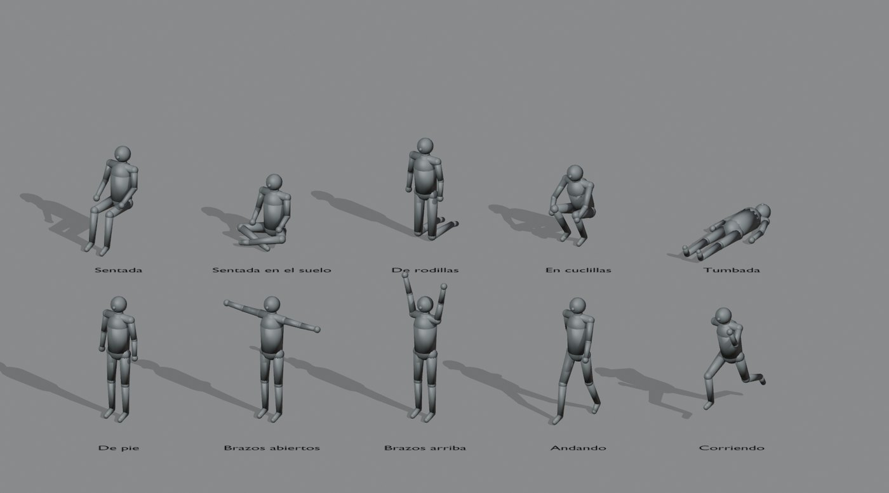
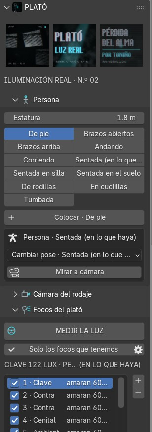
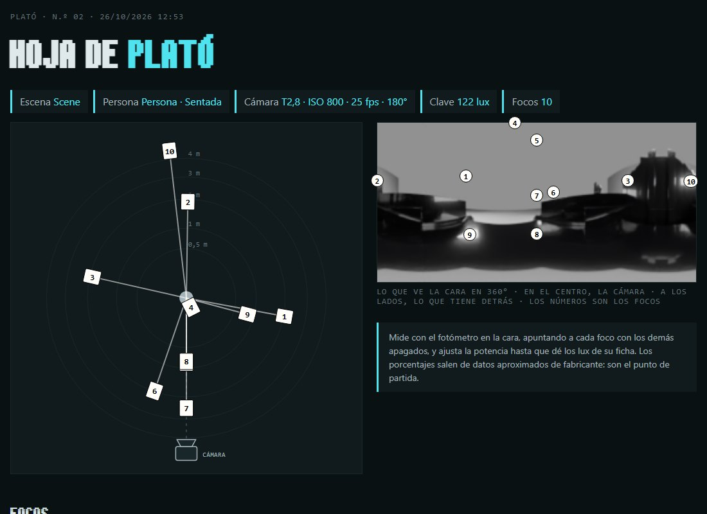
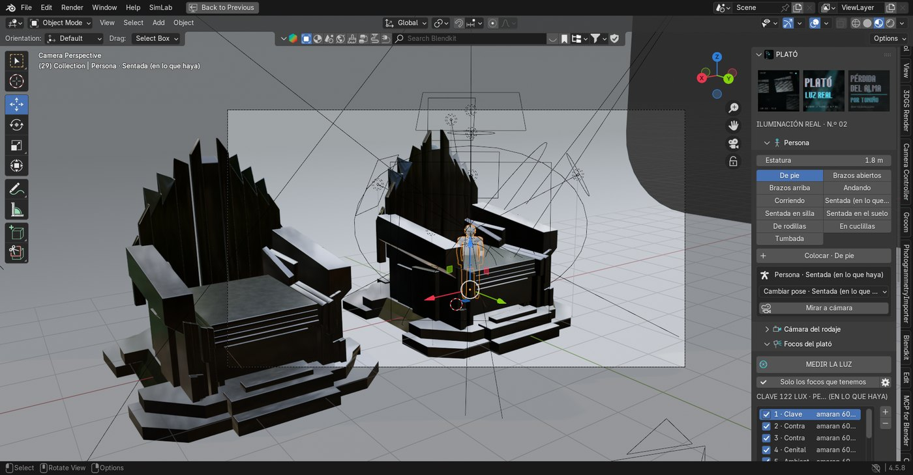
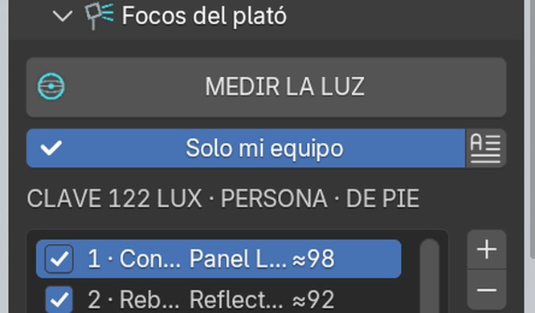
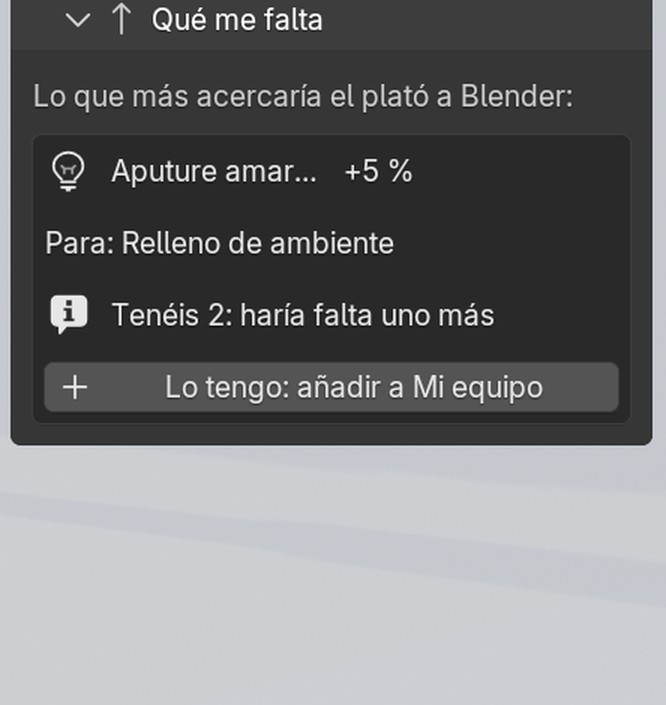
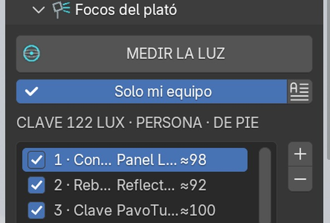

Este addon sirve para llevar al plató la luz que has diseñado en Blender. Pones una persona donde va a estar el actor, en la pose que vaya a tener, y el addon mide toda la luz que le llega a la cara: luces de Blender, HDRI, cielo, objetos que brillan y rebotes. La separa en clave, relleno, contra, cenital… y te dice con qué foco real hacer cada una: dónde ponerlo, a qué altura, con qué modificador, a qué potencia y con qué temperatura de color o gel.
También funciona al revés: eliges los focos que tenéis, los colocas en la lista y el addon los crea en Blender para ver cómo va a quedar antes de montar.
01 · antes de empezarQué necesitas
- Blender 4.2 o más nuevo (probado en 4.5 y 5.0). No hay que instalar nada más.
- Una escena con cámara activa. La medida usa Cycles por dentro aunque trabajes en EEVEE.
- En el plató, un fotómetro de luz incidente para ajustar. El addon da el punto de partida.
02 · instalaciónInstalar
plato_blender.zip y activa PLATÓ · Iluminación real.03 · la personaColocar al actor
La persona es un maniquí de 1,75 m (la estatura se cambia) con diez poses. Cada pose cambia por dónde le entra la luz: no es lo mismo una cara de pie que una cara agachada o tumbada mirando al techo.

04 · usoDe Blender al plató
E = 250 · T² / (t · ISO). Pon también la distancia máxima que cabe en vuestro plató.

05 · al revésDel plató a Blender

06 · mi equipoCon los focos que tenéis
No hace falta tener todos los focos del mundo. En el panel Mi equipo apuntas lo que tenéis o lo que vais consiguiendo, y cuántos de cada uno:

07 · parecidoCuánto se va a parecer
Cada foco tiene un % de parecido con la luz de Blender, y arriba de la lista sale el total. Se mira:
- Intensidad: si el foco llega a los lux que hacen falta (si no llega, baja según los pasos que le faltan).
- Suavidad: si la fuente se ve igual de grande desde la cara que en Blender.
- Color: si llega a la temperatura, o cuánto se aleja con el gel que hay.
- Sitio: si cabe en el plató y se puede poner a esa altura.
El total pesa más las luces que más se ven. Una luz sin foco o desmarcada cuenta como 0.

El panel Qué me falta dice qué foco, si lo tuvierais, subiría más el parecido, y cuántos puntos. Sirve para decidir qué comprar o pedir prestado. Si ya lo tenéis pero hace falta otro, lo dice. Con Lo tengo se añade a Mi equipo.

08 · catálogoEl catálogo
El catálogo general trae 42 focos (Aputure, amaran, Nanlite, Godox, ARRI, Astera, Litepanels, Dedolight y prácticos como bombillas o neón)
y 12 modificadores. Los datos son aproximados (lux a 1 m con su accesorio, de fichas de fabricante): sirven para elegir y como punto de partida.
Mi equipo y los focos propios se guardan en ~/PLATO/catalogo_propio.json (vale para todos los proyectos); el botón del documento junto a Solo mi equipo lo abre por si queréis editarlo a mano.
| Campo | Qué es |
|---|---|
id | Nombre corto sin espacios |
tipo | COB, Panel, Tubo, Fresnel, Mini o Práctico (decide qué modificadores admite) |
lux_1m | Lux a 1 metro con su accesorio de serie y al 100 % |
tam_m | Tamaño de la superficie que emite, en metros |
k | Temperatura mínima y máxima, [5600, 5600] si es solo luz día |
rgb, bowens, bateria | true / false |
09 · cómo piensaQué hace por dentro
- Luces de Blender: se suman con su fórmula (punto y foco
P/4πd², áreaP/πd², sol su fuerza) y se comprueba si algo las tapa. - El resto: una panorámica de 360° con Cycles desde la cara. Las zonas brillantes se agrupan en fuentes y lo demás es ambiente (cielo, horizonte, suelo).
- Papel: según el ángulo con la cámara y la altura: clave, relleno, contra, lateral, cenital, rebote de suelo.
- Suavidad: el tamaño aparente de la fuente vista desde la cara decide el modificador y la distancia (una ventana de 1,2 m a 2 m es igual de suave que en Blender).
- Potencia: lux que debe dar × distancia² ÷ lux a 1 m del foco con el modificador y el gel.
- Color: temperatura por McCamy. Si el foco no llega a esa temperatura propone un gel CTO o CTB; si es un color saturado, modo RGB o un gel de color.
10 · problemasSi algo falla
| Pasa esto | Haz esto |
|---|---|
| «No llega luz a la cara» | La persona está dentro de un objeto o la escena no tiene luz. Muévela un poco. |
| Un foco sale en rojo, «no llega» | Acércalo, quita difusión, elige uno más potente o abre diafragma / sube ISO. |
| Salen focos muy flojos que no importan | Desmárcalos en la lista: no salen en la hoja ni se crean. |
| Una luz sale «sin foco» | Se acabó vuestro equipo: mira «Qué me falta», añade otro foco o desactiva «Solo mi equipo». |
| La tablet no abre la dirección | Tiene que estar en la misma wifi. Windows puede pedir permiso al firewall la primera vez. |
11 · cómo se hizoModo de trabajo
Igual que CorridorKey, lo desarrollé con Claude Code: yo decidía qué tenía que hacer el addon y cómo se usa en el plató, y el asistente escribía el código, lo probaba en Blender sin interfaz y luego con interfaz, y me enseñaba capturas. Para comprobar la traducción, la escena del trono se midió, se crearon los focos del plató en Blender y se volvió a medir con solo esos focos: las proporciones coinciden.
12 · créditosCréditos
PLATÓ · Iluminación real, por Toniño, para el TFG Pérdida del Alma. Licencia GPL 3.0 o posterior, como Blender. Los datos de los focos son de las fichas públicas de cada fabricante, aproximados.